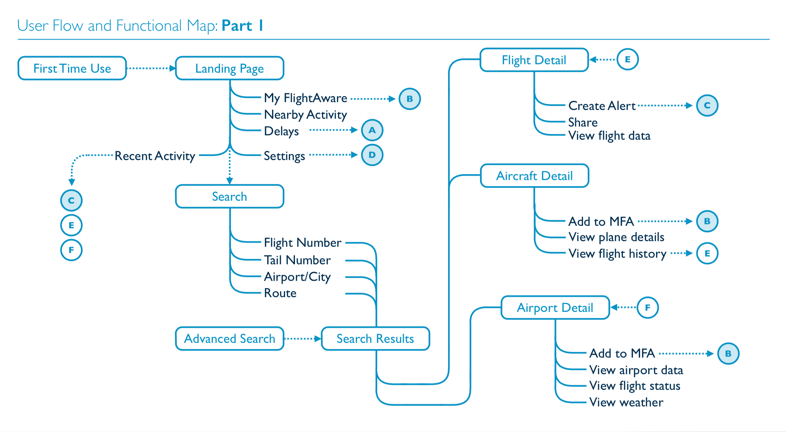
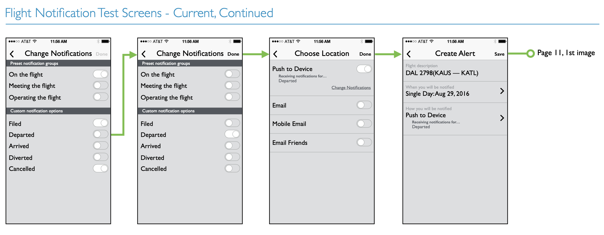

FlightAware is at the forefront of flight tracking technology. They provide real-time, worldwide flight data for airlines, governments, pilots, and air travelers. FlightAware has millions of daily users and provides critical infrastructure to a massive industry. As an independent consultant, I jumped at the opportunity to work with them to redesign and rebuild their iOS app.
The project began with a discovery phase. It consisted of stakeholder interviews, a competitive analysis, and a review of the app’s analytics. The research uncovered four key success factors for the project:
- Improve the app's usability
- Better-account for the needs of FlightAware’s different personas
- Increase usage of the flight alert feature
- Improve codebase maintainability and extensibility
Improving the UX
Usability was the easiest success factor to address. The existing version of the app relied on an unconventional modal navigation pattern that caused users to become lost in navigation loops. I restructured the application’s information architecture to group related functionality and tie functional areas together with a drill-in/drill-out navigation stack typical with most iOS applications.
Addressing User Needs
FlightAware has four personas for its mobile apps: commercial travelers, private pilots, professional airline employees, and flight enthusiasts. These personas have wildly varying needs. For example, commercial travelers are interested in succinct and timely information about their trip. They are looking for a streamlined experience. Pilots and enthusiasts are both have high-density data needs, but even their use cases are divergent. Pilots want detailed information about their plane, flight history, and route details. Enthusiasts are interested in everything that is happening in the skies around them in real-time.
This was the most difficult aspect of the project to solve for because organizational constraints dictated that we take a “one-size-fits-all” approach to the app’s design. I was constantly making trade-offs with stakeholders to strike a balance between clarity and the need to surface as much data as possible. I primarily relied on varying font sizes and white space to wrangle all the information packed into a given screen.
Increasing Feature Usage
FlightAware wanted to increase adoption of their flight alert feature which automatically notifies users of flight status changes. Research showed that only 2% of FlightAware’s iOS users were making use of alerts. I didn't know if this was because the feature was hard to use, if users weren’t interested in it, or if there was another factor at play.
With limited time and resources I decided to focus on the hypothesis that the feature was hard to use. I picked this direction because personal testing and anecdotal evidence showed that it was indeed difficult to create an alert within the app. And I assumed that by improving the workflow we could increase adoption by marketing the feature. I set up a usability study with Validately (now part of UserZoom) to test out different workflows.
The alert creation workflow was improved by introducing a summary screen that emphasized the “when,” “where,” and “what” of a notification. We also implemented a drill-in/drill-out workflow to make it easier to create and edit details.
Obj-C ➡️ Swift
Rewriting the project in Swift resulted in several benefits. I reduced view controller bloat by separating out business logic and API calls into dedicated service objects. Each service object encapsulated code for the functional area it was responsible for and it became much easier to debug issues becuase you knew exactly where to look. Additionally, I introduced a collection of UI styling and data transformer objects that made it easier to ensure consistency in the app’s presentation layer.
FlightAware did not have a dedicated mobile or QA team so dealing with production bugs was tricky. I was hurting my client by taking on too many responsibilities and becoming a bottleneck, so I proposed that we move from a monolithic release schedule to a something closer to a continuous release cycle. I also stood up a light-weight QA and bug-tracking plan. The goal was to create something manageable by a small team and provide them with just enough coverage to feel safe when releasing a new version into the wild.